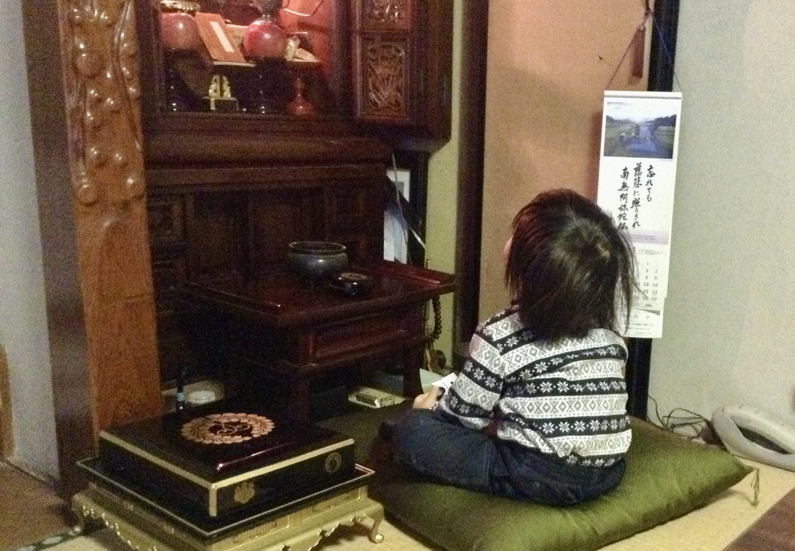
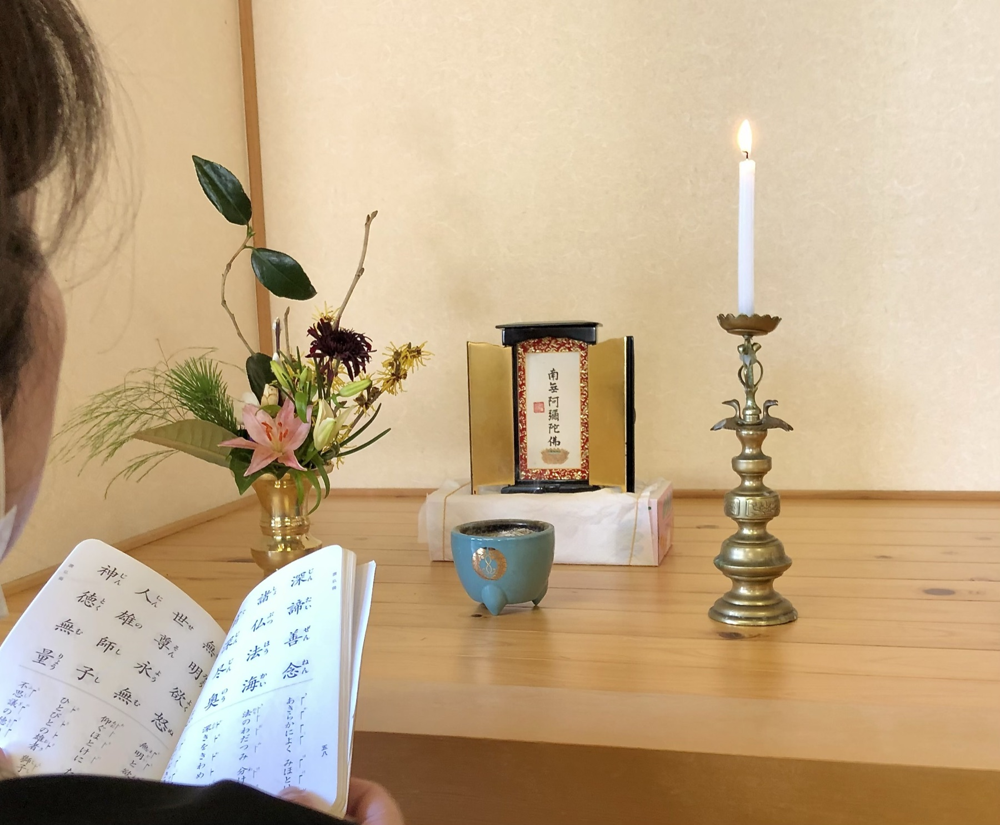
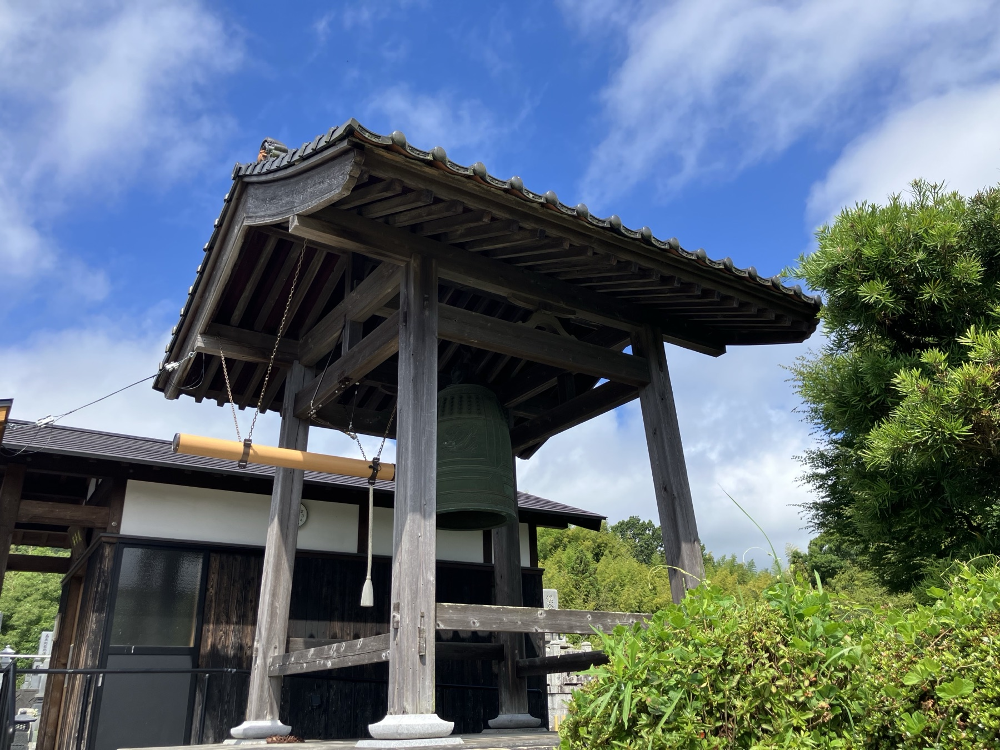
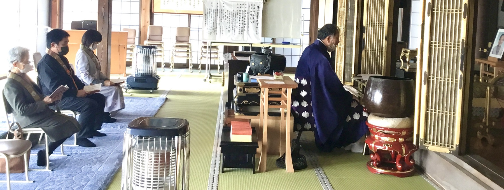
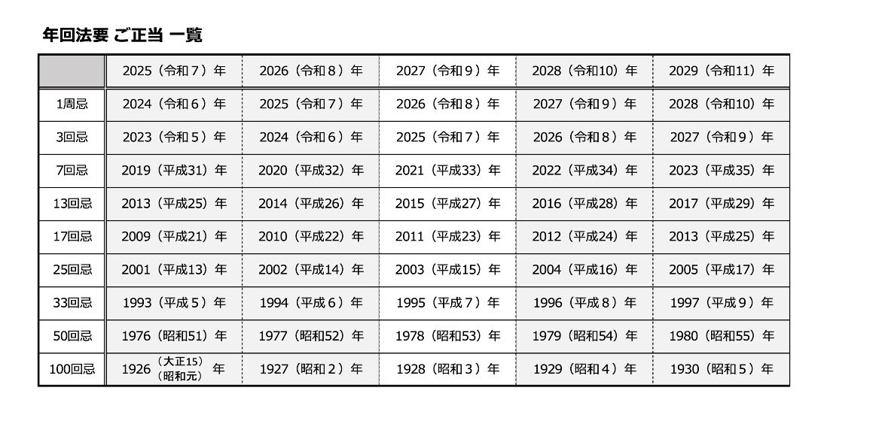
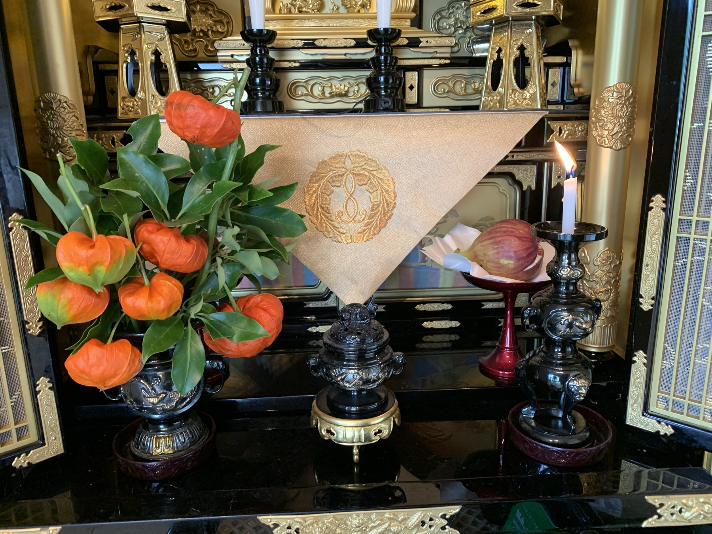
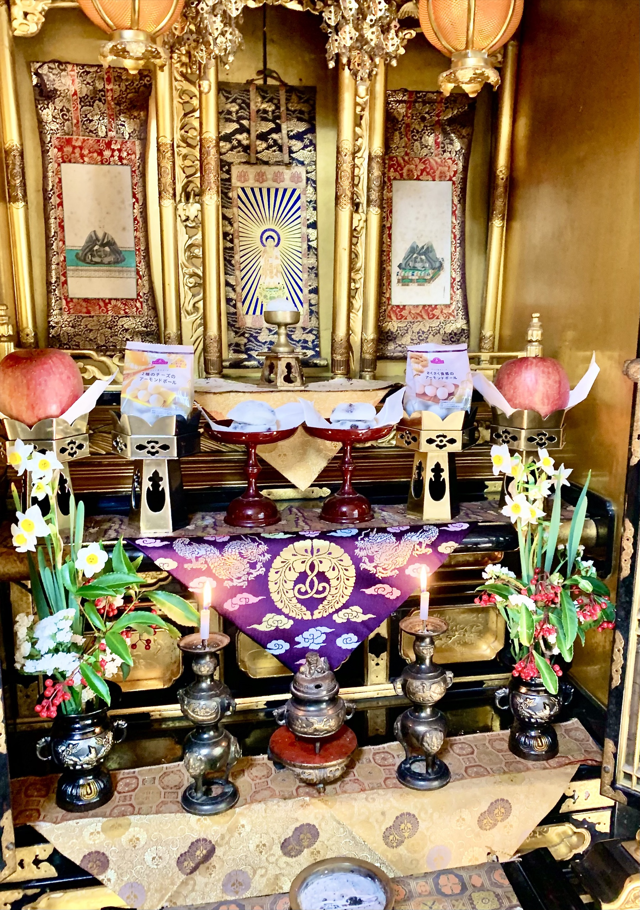
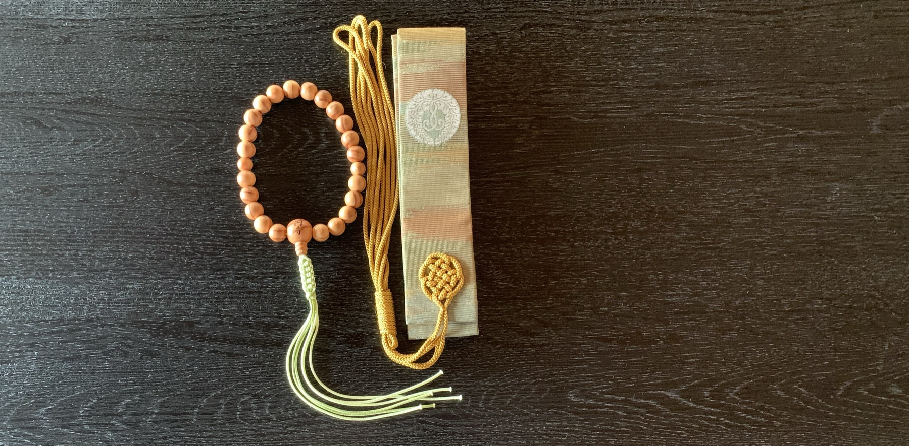
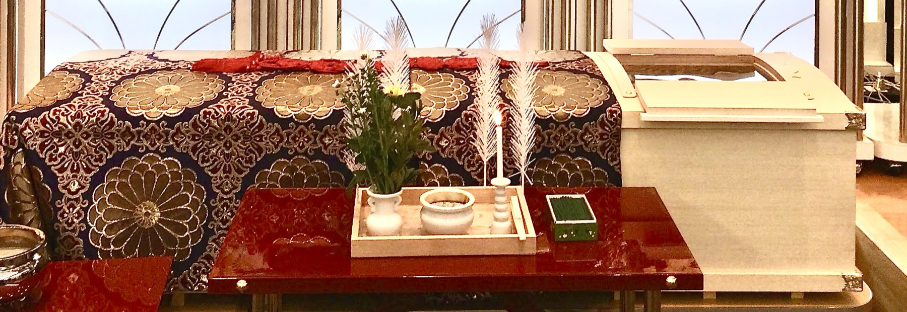

浄土真宗本願寺派
慈化山西円寺
これまでも これからも あなたとともにいつまでも
田舎の静かな時間の流れと共にある
浄土真宗本願寺派のお寺です
浄土真宗本願寺派のお寺です
私の今をご先祖からの歩みに目を向けてみましょう。
私たちは、ご先祖から受け継いだ大切な命のつながりのなかに生かされています。
両親のお名前は知っていても、お祖父さんやお祖母さん、さらにその上の世代となると、お名前や姿を知る機会は少なくなっていきます。10代（約250年前）さかのぼれば、ご先祖は1,024人。20代（約500年前）までさかのぼると、その数は100万人を超えます。その中のたった一人でも欠けていたら、今の私はここに生まれていません。
私たちは自分一人の力ではなく、ご先祖をはじめ多くの人々や目に見えない支えによって「今」を生きています。そんな感謝と思いを表す言葉が「おかげさま」です。日々の暮らしの中でこの気持ちを大切にし、会話の中にも語り継いでいきたいものです。
そして、私たちを包み「必ず救う」と願いをかけてくださっているのがご本尊「阿弥陀如来」さまです。ご先祖も私たちも、ともに阿弥陀さまの大きな願いの中で生きています。
まずは一日の中で少しの時間でもご本尊の前に座り、両手を合わせて「なもあみだぶつ」とお念仏を称える時間を大切にしていきましょう。

浄土真宗の教えは、ご本尊・阿弥陀如来（あみだにょらい）を信じ、その救いに身を委ねることです。「南無阿弥陀仏」とお念仏を称え、感謝とお任せの心で日々を過ごします。
そしてこの世での縁が尽きるとき、阿弥陀さまのおはたらきによって極楽浄土へ往生し、仏となります（往生即成仏）。そして再び迷いの世に還り、人々を導くはたらきをさせていただくのです。

「おつとめ」は、仏さまを思い、一日一日を大切に生きるための大切な時間です。
お出かけ前や夕食前など、ご本尊の前に座りお礼を申すことから始めてみませんか。お経を唱えることは、自分の声ですが仏さまの声として味わう、仏さまとの対話の時間です。
「正信念仏偈」のおつとめは、本願寺第8代・蓮如上人が吉崎御坊におられた時代、近所の人びとが朝夕に集まっておつとめをする中で「正信偈」に「念仏和讃」を加えて、真宗の門徒として親鸞聖人のお言葉を朝夕に唱えることがもっともふさわしいと考えられ、1473（文明5）年以来、「正信念仏偈」は真宗の勤行と定められ、500年以上にわたり朝夕のおつとめとして唱え継がれてきました。
日常勤行聖典には短いお勤めもありますが、慣れてきたら「正信念仏偈」をお勤めしてみましょう。一日に決まった時間、心静かに仏さまと向き合う生活のリズムを作っていくことが、人生をより豊かに彩ってくれます。

西円寺の梵鐘は1974（昭和49）年に再建立され、毎日の朝夕のお勤めや法要の告知を行っています。

法事は亡き人を偲ぶとともに、命の尊さを教えられる大切なご縁です。日課勤行とは別に、区切りの年にはご縁の方々を招き法事（年回法要・年忌ともいう）をお勤めしましょう。
年忌（毎年の法事）のお参りや祥月（しょうつき＝月毎の命日で月命日や月忌ともいう）、施設での法要や夕方の参拝など、それぞれの生活やご家族のかたちに合わせたご相談に応じます。




※生活スタイルの変化で座布団より椅子がいいという方には、本堂の椅子をお貸しいたします。本堂でもお勤めできます。

部屋の中での葬儀が一般的になって目にすることは少なくなりましたが、野外で葬儀をしていた時のお荘厳「路地盆」を使うこともあります。
葬儀は、亡き人を送るためだけの儀式ではありません。ご本尊・阿弥陀如来を仰ぎ、日々慣れ親しんだ「正信偈」を、亡き人が肉体をもって行う最後のお勤めです。
現在は、僧侶の正装である七条袈裟をデザインした布で棺を被い、法友である住職が、亡き人に代わって声を出してお勤めしております。時代とともに少しずつ形も変化しておりますが、葬儀への考え方は今も変わっておりません。
寂しさの中にもぬくもりを感じるのは、きっとご先祖からの考え方が伝えられ、この法縁をいただいてきたからだと思います。
葬儀は突然のことで、ご遺族は悲しみや不安の中で、臨終のことから葬儀の準備まで一度に考えなければなりません。まずはご連絡ください。状況に応じて、最善の形を一緒に考え、選択肢をご案内します。
ご自宅のお仏壇や、西円寺の本堂・仏間を利用した葬儀も可能です。葬儀後の法要についても、随時ご相談ください。